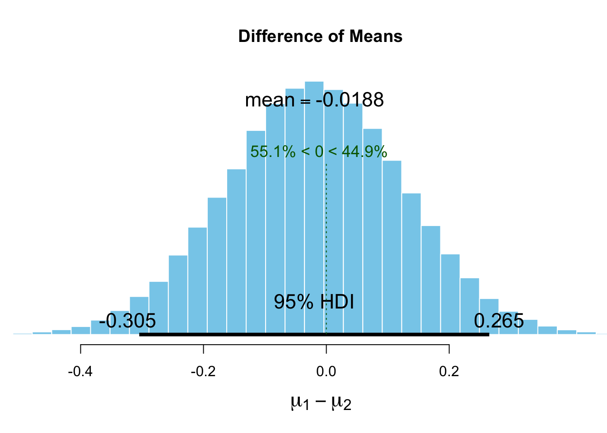
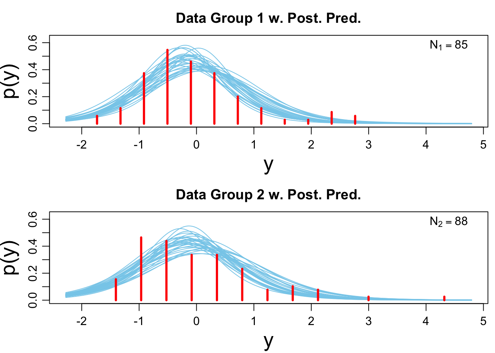
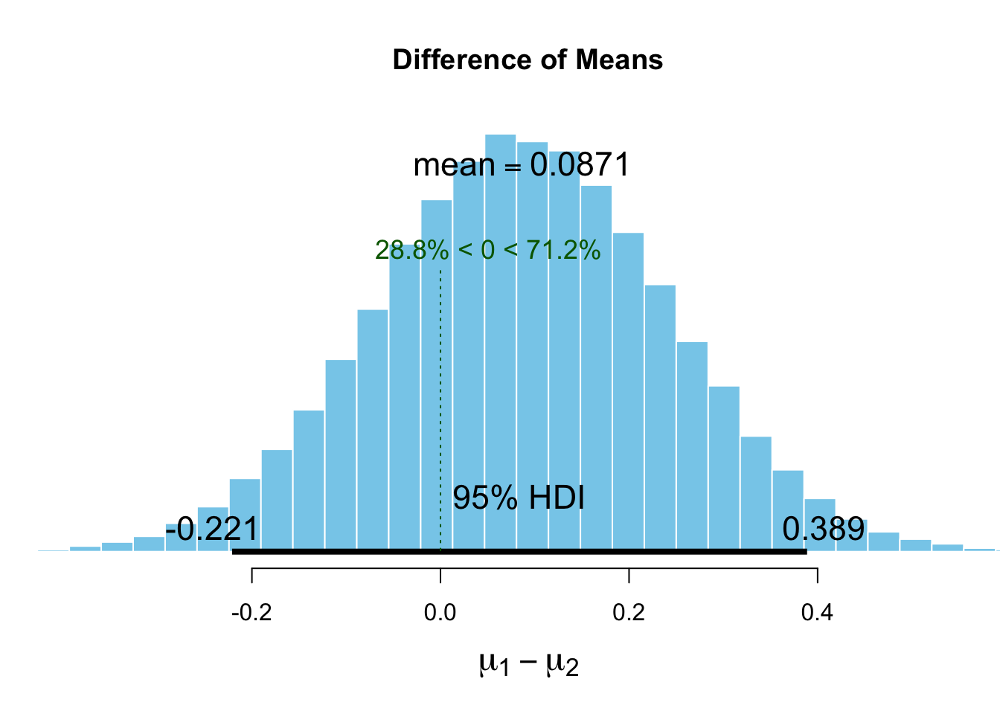
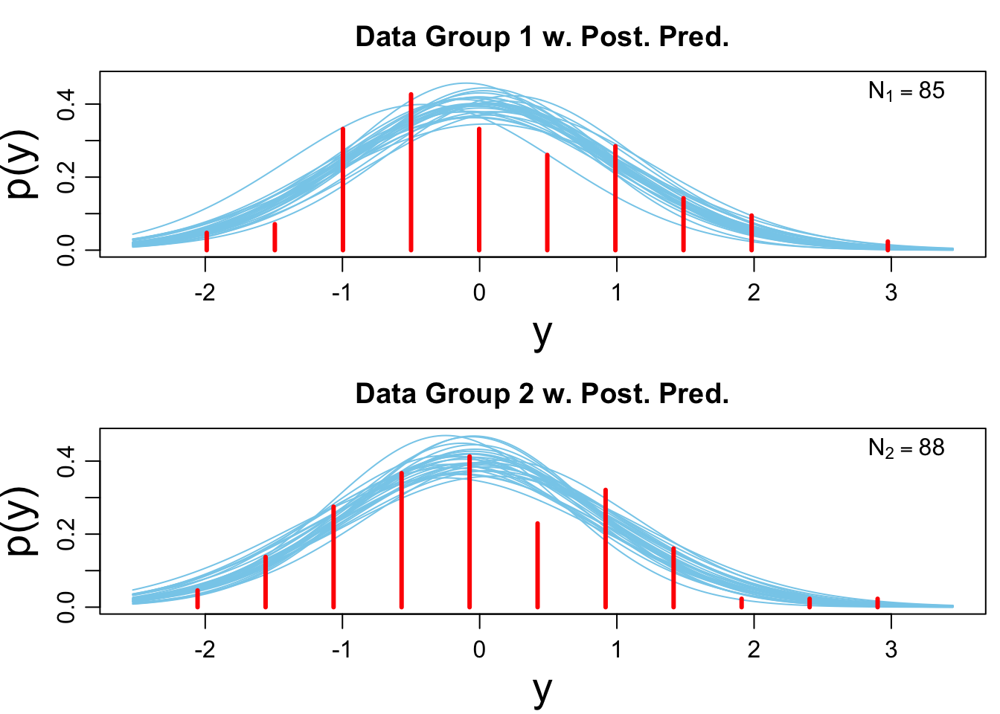

Sociometer analysis
Benjamin Holding
Descriptive statistics
sociometric.tagged %>% group_by(SD) %>% summarise(mean(speech_profile_total_speaking),sd(speech_profile_total_speaking)) %>% print.data.frame()## SD mean(speech_profile_total_speaking) sd(speech_profile_total_speaking)
## 1 0 649.5180 126.6614
## 2 1 616.1271 116.4013sociometric.tagged %>% group_by(SD) %>% summarise(mean(audio_front_volume_SCALED),sd(audio_front_volume_SCALED)) ## # A tibble: 2 x 3
## SD `mean(audio_front_volume_SCALED)` `sd(audio_front_volume_SCALED)`
## <int> <dbl> <dbl>
## 1 0 0.0175 1.05
## 2 1 -0.0183 0.952sociometric.tagged %>% group_by(SD) %>% summarise(mean(audio_front_vol_consistency_SCALED),sd(audio_front_vol_consistency_SCALED)) ## # A tibble: 2 x 3
## SD `mean(audio_front_vol_consistency_SCALED)` `sd(audio_front_vol_co…
## <int> <dbl> <dbl>
## 1 0 -0.0456 0.989
## 2 1 0.0477 1.01Analysis
Total speaking time
#set the priors
Speaking.priors <- list(muM = 1050, muSD = 525)
# run the bayesian 't-test'
Speaking_best <- BESTmcmc(sociometric.tagged$speech_profile_total_speaking[sociometric.tagged$SD ==1],
sociometric.tagged$speech_profile_total_speaking[sociometric.tagged$SD ==0],
priors = Speaking.priors,
parallel = T)## Waiting for parallel processing to complete...done.#running the same to get the priors
Speaking_best_priors <- BESTmcmc(sociometric.tagged$speech_profile_total_speaking[sociometric.tagged$SD ==1],
sociometric.tagged$speech_profile_total_speaking[sociometric.tagged$SD ==0],
priors = Speaking.priors,
parallel = T,
doPriorsOnly = T)## Warning: The output shows the prior distributions,
## NOT the posterior distributions for your data.## Waiting for parallel processing to complete...done.# check the output
speaking.summary <- summary(Speaking_best)
speaking.summary## mean median mode HDI% HDIlo HDIup compVal %>compVal
## mu1 617.516 617.531 617.232 95 592.322 643.0418
## mu2 648.916 648.910 648.707 95 622.427 675.7920
## muDiff -31.399 -31.298 -30.305 95 -69.504 4.2837 0 4.65
## sigma1 113.671 113.184 111.249 95 94.381 133.2795
## sigma2 122.829 122.452 121.912 95 102.158 144.9319
## sigmaDiff -9.157 -9.147 -8.301 95 -36.638 17.8521 0 25.18
## nu 38.051 29.367 14.967 95 4.129 97.6668
## log10nu 1.465 1.468 1.516 95 0.853 2.0711
## effSz -0.266 -0.265 -0.257 95 -0.581 0.0418 0 4.65#Creating a plot of the posterior distribution for the difference between groups
plot(Speaking_best) #the probability that the true value is smaller than zero = 95.5%
#is the model a reasonable description of the data?
plotPostPred(Speaking_best)
#to see all plots
plotAll(Speaking_best)
Total volume
# run the bayesian 't-test'
total_volume_best <- BESTmcmc(sociometric.tagged$audio_front_volume_SCALED[sociometric.tagged$SD ==1],
sociometric.tagged$audio_front_volume_SCALED[sociometric.tagged$SD ==0],
parallel = T)## Waiting for parallel processing to complete...done.# check the output
total_volume.summary <- summary(total_volume_best)
total_volume.summary## mean median mode HDI% HDIlo HDIup compVal %>compVal
## mu1 -0.1034 -0.1048 -0.1063 95 -0.301 0.106
## mu2 -0.0726 -0.0740 -0.0750 95 -0.289 0.149
## muDiff -0.0308 -0.0307 -0.0431 95 -0.318 0.250 0 41.6
## sigma1 0.8199 0.8172 0.8231 95 0.632 1.014
## sigma2 0.9051 0.9010 0.8945 95 0.714 1.105
## sigmaDiff -0.0852 -0.0854 -0.0828 95 -0.303 0.139 0 22.2
## nu 11.1234 7.7187 5.2945 95 2.313 31.044
## log10nu 0.9374 0.8875 0.8058 95 0.476 1.537
## effSz -0.0359 -0.0357 -0.0523 95 -0.368 0.289 0 41.6#Creating a plot of the posterior distribution for the difference between groups
plot(total_volume_best)
#is the model a reasonable description of the data?
plotPostPred(total_volume_best)
#to see all plots
plotAll(total_volume_best)
Volume variation
# run the bayesian 't-test'
variation_volume_best <- BESTmcmc(sociometric.tagged$audio_front_vol_consistency_SCALED[sociometric.tagged$SD ==1],
sociometric.tagged$audio_front_vol_consistency_SCALED [sociometric.tagged$SD ==0],
parallel = T)## Waiting for parallel processing to complete...done.# check the output
variation_volume.summary <- summary(variation_volume_best)
variation_volume.summary## mean median mode HDI% HDIlo HDIup compVal %>compVal
## mu1 0.0365 0.0362 0.0338 95 -0.187 0.257
## mu2 -0.0546 -0.0546 -0.0552 95 -0.261 0.157
## muDiff 0.0911 0.0916 0.0932 95 -0.210 0.397 0 72.2
## sigma1 1.0049 1.0000 0.9893 95 0.842 1.168
## sigma2 0.9785 0.9741 0.9672 95 0.828 1.138
## sigmaDiff 0.0264 0.0255 0.0253 95 -0.190 0.253 0 59.2
## nu 47.1148 38.9220 24.6997 95 6.287 110.205
## log10nu 1.5845 1.5902 1.6094 95 1.042 2.125
## effSz 0.0920 0.0925 0.0961 95 -0.209 0.399 0 72.2#Creating a plot of the posterior distribution for the difference between groups
plot(variation_volume_best)
#is the model a reasonable description of the data?
plotPostPred(variation_volume_best)
#to see all plots
plotAll(variation_volume_best)